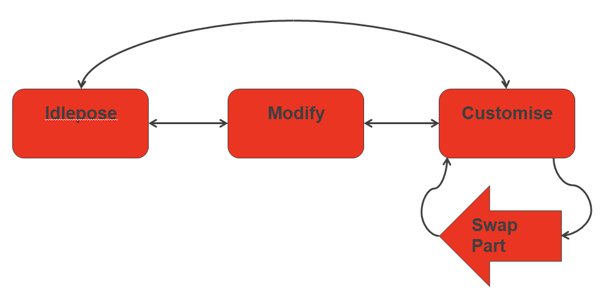
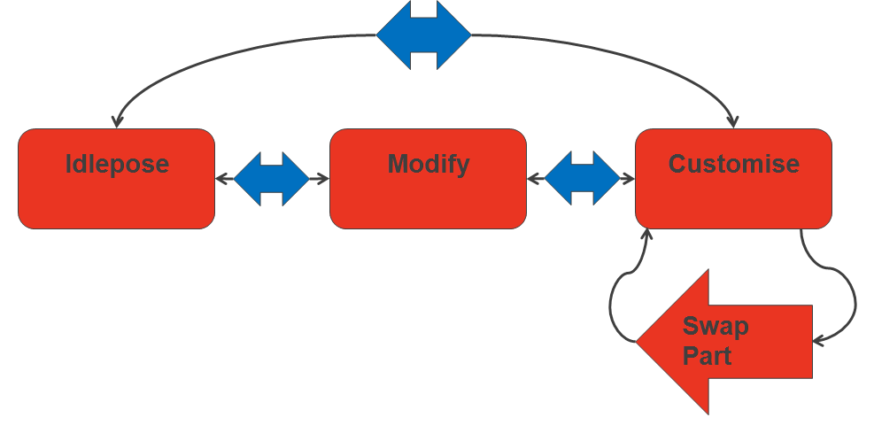
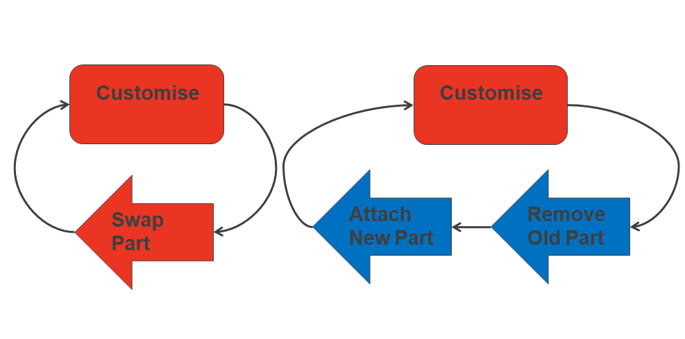

Описание
А FragmentID — основная метка, под которой хранится фрагмент.
FragmentID представляет состояние анимации, такое как «Движение», «Холостой ход», «Перезагрузка», «Выстрел» и т. д. Игра запрашивает фрагменты, указав этот FragmentID. Вопреки тому, что можно предположить по названию «FragmentID», обычно существует множество фрагментов, подпадающих под один и тот же FragmentID. Например, у вас может быть много разных фрагментов «Движение»: они представляют собой либо случайные вариации, либо вариации, зависящие от контекста (движение приседая, перемещение стоя и т. д.).
Обычно программист определяет FragmentID для каждого базового состояния анимации, а затем аниматоры могут создавать фрагменты для этих FragmentIDs.
FragmentID или Переход?
Хорошее эмпирическое правило для определения того, каким должен быть FragmentID: сократите состояния до минимума, логически необходимого для управления потоком работы системы. Это весь код, необходимый для управления, и его можно использовать в качестве ключа FragmentIDs.
Например, вот как может выглядеть функция создания оружия:

Если нам нужна анимация между FragmentIDs лучше всего обращаться с ними как Переходы. Это уменьшает объем кода и упрощает модификацию системы исключительно с помощью данных:

Серая зона — это этап настройки. При замене детали необходимо последовательно удалять определенную старую деталь и вставлять новую (слева на рисунке).
Или мы могли бы просто запросить альтернативную настройку позиции (изменить тег, определяющий позицию, и запросить новый фрагмент), а затем позволить системе перехода обрабатывать удаление старой и применение новой части. Это также позволит аниматорам использовать одну анимацию для выполнения обоих шагов, если они того пожелают.

Создание и редактирование FragmentIDs
FragmentIDs создаются, переименовываются и удаляются в Mannequin Браузер фрагментов.
Вы редактируете их в Mannequin FragmentID Редактор.
Хранение
FragmentIDs хранятся в Файл определения FragmentID (xxxActions.xml), который упоминается в настройке главного героя, Файл определения контроллера (xxxControllerDefs.xml).